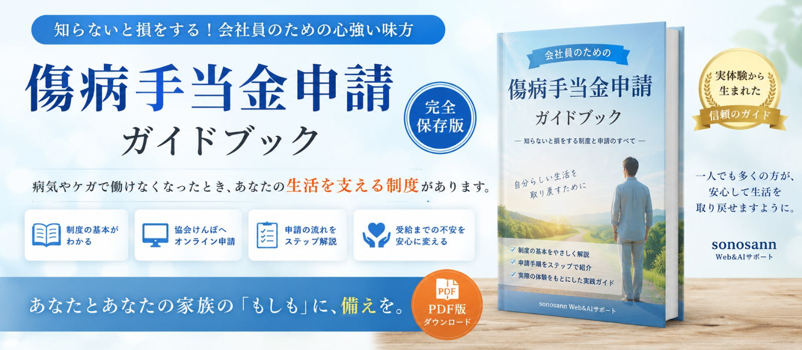
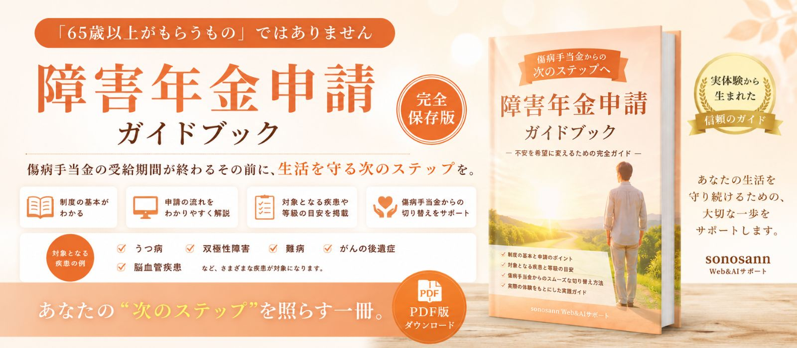
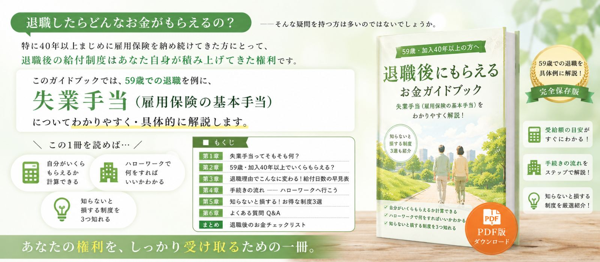
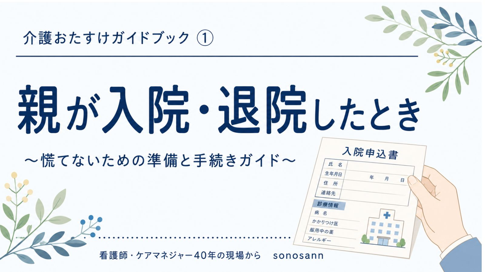
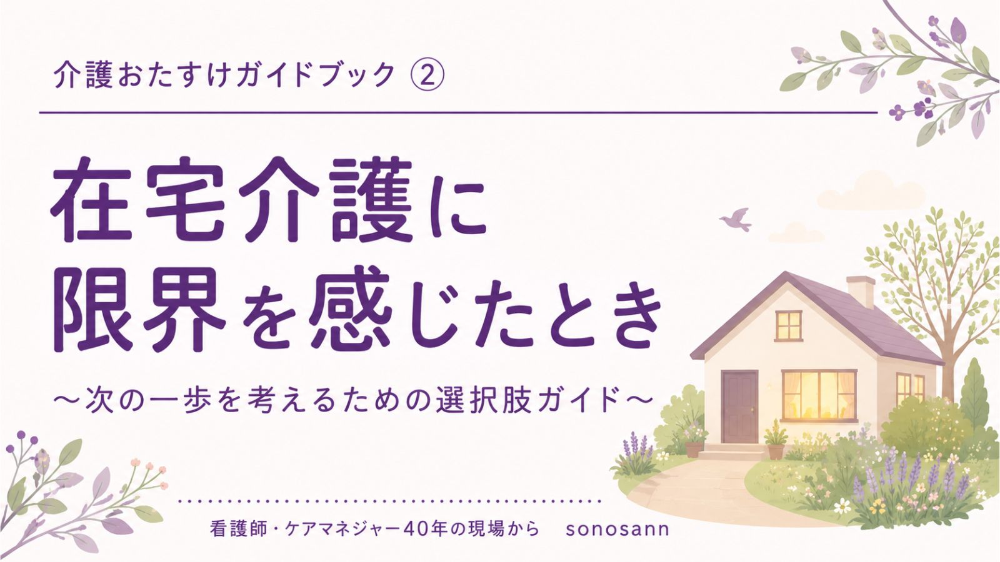
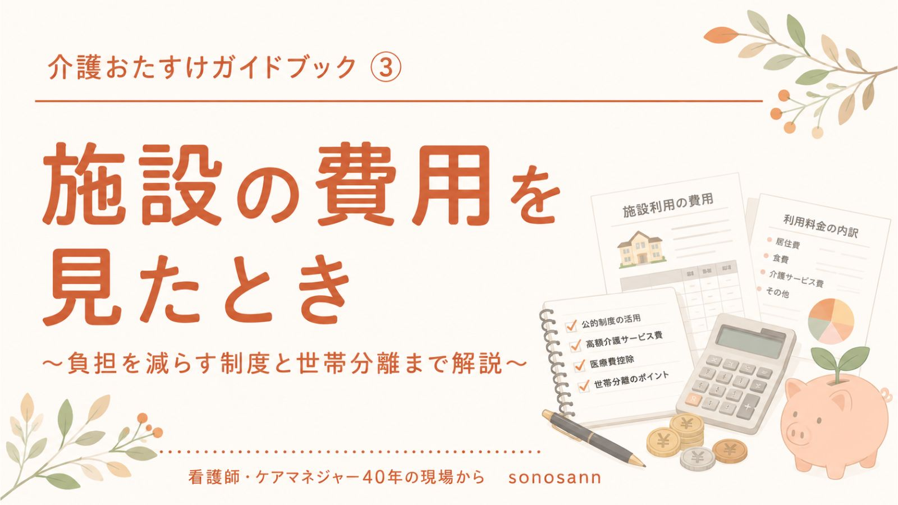
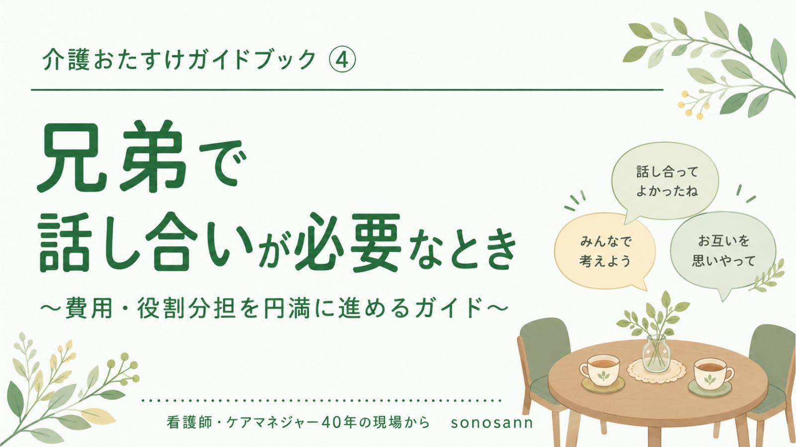

看護師25年・ケアマネジャー7年の現場経験と、AI活用のノウハウから生まれた
ケアマネジャーのための業務支援ツール集です。
「AIは情報、動くのは人」——専門職の判断をサポートする道具として設計しています。
事業所ごとの介護報酬加算 管理ツール
事業所ごとに異なる介護報酬加算の情報を、フィルタリング・検索しながら一元管理できるツールです。バックアップ・リストア機能付きで、日々の算定確認や更新業務の負担を軽減します。
認定情報 → 課題整理総括表 下書き作成ツール
認定調査票・主治医意見書などの認定情報をもとに、課題整理総括表「状況の事実」24項目（現在・要因・改善維持の可能性・備考）の下書きを作成。備考欄はそのままお使いの介護ソフトへコピペできます。
本ツールは認定情報（認定調査票・主治医意見書等）のみで動作します。単品②（ケアプラン転記アシスト）は不要です。ケアプランはご自身で作成されたい方、まずは課題整理だけ効率化したい方に向いています。
アセスメント → ケアプラン下書き 転記支援ツール
アセスメント結果をもとに作成したケアプラン原案（第1表・第2表）の下書きを、様式の形に整理して表示。欄ごとにコピーして、お使いの介護ソフトへそのまま貼り付けられます。
本ツールは認定情報＋本人・ご家族の意向があれば動作します。単品①（課題整理総括表）は必須ではありませんが、課題整理から丁寧に進めたい方には3点セットもおすすめです。
※サポート内容の詳細はご購入後にご案内します
ツールを見る →ツールの詳細・購入について相談する
お問い合わせHow it works
ツールはすべてブラウザ上で動作し、入力内容が外部に送信されることはありません。
ケアプランの最終判断・本人家族への説明と同意は、必ずケアマネジャーご自身が行ってください。
病気・ケガ・退職……いざというときに知っておきたい給付金・手続きをわかりやすく解説。
看護師・ケアマネ30年の現場経験 × AI活用で作った実践ガイドです。

傷病手当金申請ガイドブック
¥100
障害年金申請ガイドブック
¥100
退職後にもらえるお金ガイドブック
¥100
クレジットカード払い・PayPay対応
決済完了後すぐにPDFをダウンロードできます
親の入院・在宅介護・施設費用・兄弟間の話し合い……家族介護でよくある4つの場面を、
看護師・ケアマネ経験からわかりやすく解説する実践ガイドです。
介護おたすけガイドブック 4冊セット
¥400¥20050% OFF
①親が入院・退院したとき ・ ②在宅介護に限界を感じたとき ・ ③施設の費用を見たとき ・ ④兄弟で話し合いが必要なとき 4冊全て含む
🛒 4冊セットを購入する（¥200）



クレジットカード払い・PayPay対応
決済完了後すぐにPDFをダウンロードできます